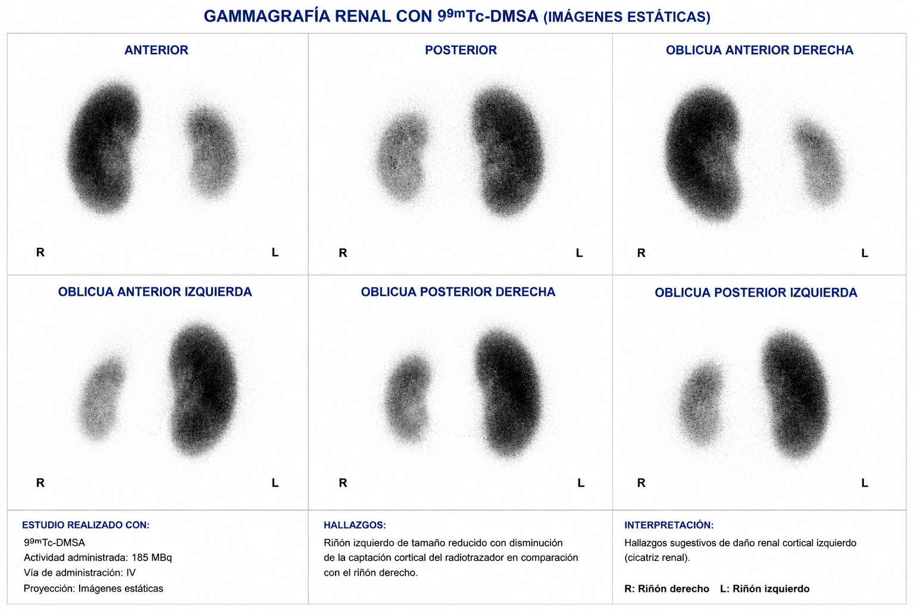
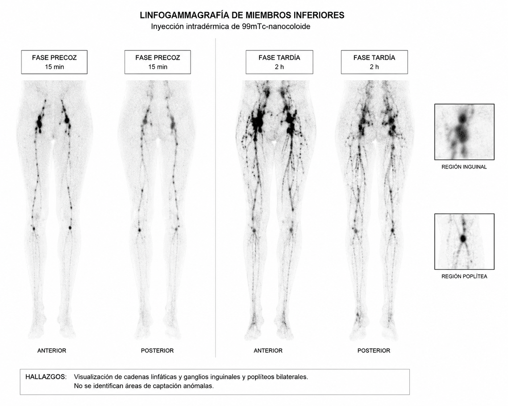
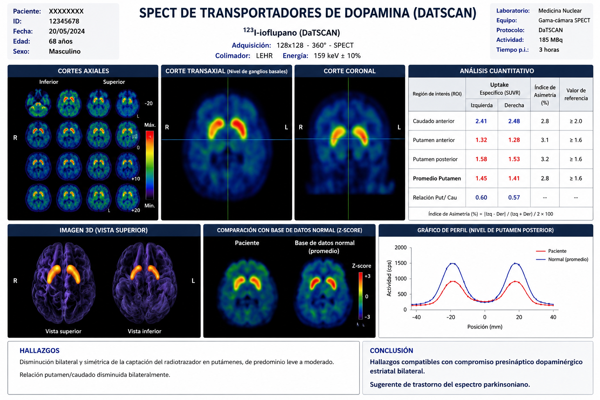
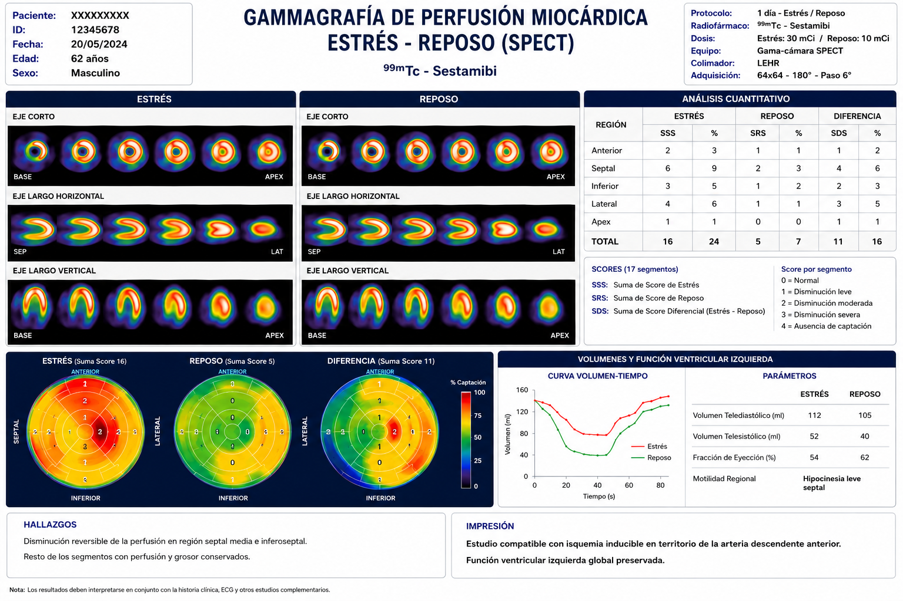
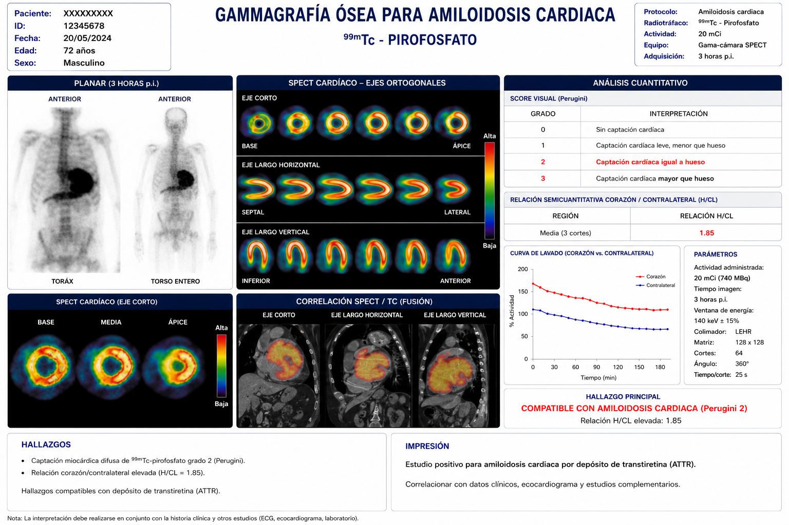
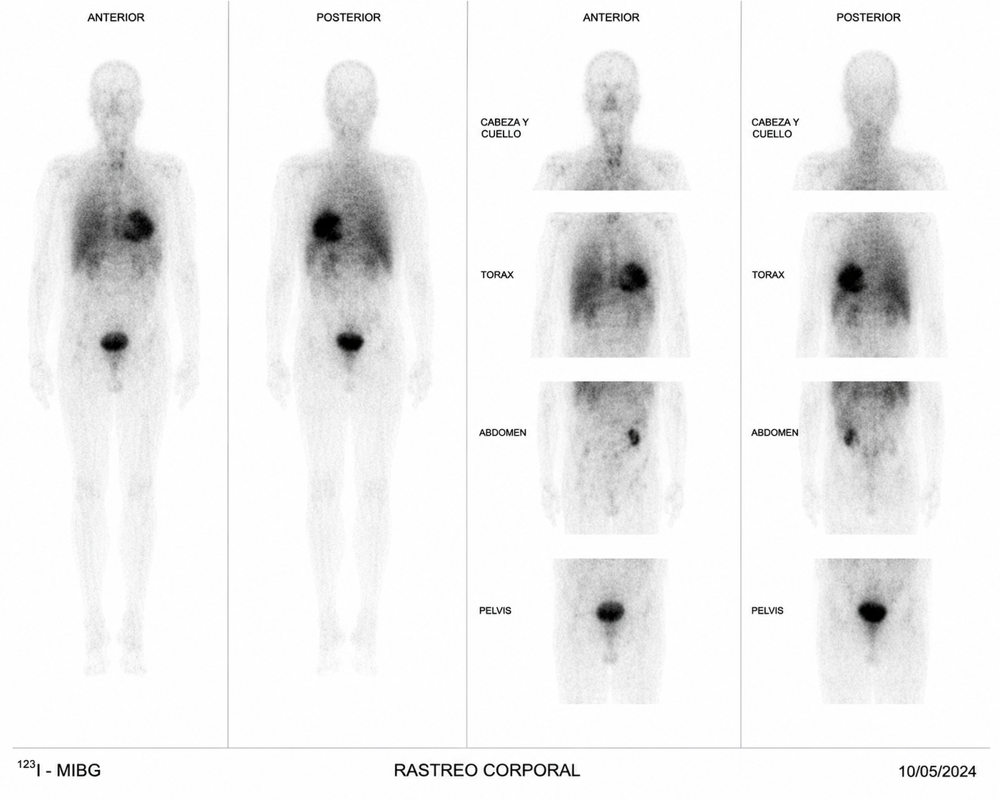

Gammagrafía Ósea

Después dejaremos pasar entre 2 a 4 horas para repetir más imágenes. En el tiempo de espera se requiere beber abundante líquido (sobre 1,5 litros de agua), pudiendo orinar cuantas veces lo necesite y comer.
Si permanece dentro del recinto hospitalarío, deberá esperar en la sala exclusiva del servicio de Medicina Nuclear, que contará también con un baño para los pacientes que se encuentren realizando la prueba.
Si desea salir no hay problemas, lo único que no deberá estar acompañado con mujeres embarazadas o niños pequeños.
En caso de embarazo y lactancia deberá comunicarlo al servicio de Medicina Nuclear para dar instrucciones.
Gammagrafía Tiroides

No haber sido sometido en los dos meses previos a pruebas con contrastes yodados
Una vez inyectado se esperará entre 20 a 30 minutos y, pasado el tiempo se adquirirá la imagen que dura unos 10 minutos.
En caso de embarazo y lactancia deberá comunicarlo al servicio de Medicina Nuclear para dar instrucciones.
Gammagrafía Renal

Una vez inyectado deberá esperar unas 3 horas y, pasado el tiempo se adquirirán las imágenes que duran unos 30 minutos.
En el tiempo de espera se requiere beber abundante líquido (sobre 1,5 litros de agua), pudiendo orinar cuantas veces lo necesite y comer.
Si permanece dentro del recinto hopitalario, deberá esperar en la sala exclusiva del servicio de Medicina Nuclear, que contará también con un baño para los pacientes que se encuentren realizando la prueba.
Si desea salir no hay problemas, lo único que no deberá estar acompañado con mujeres embarazadas o niños pequeños.
En caso de embarazo y lactancia deberá comunicarlo al servicio de Medicina Nuclear para dar instrucciones.
Gammagrafía Paratiroides
Si ha sido operado del tiroides, comunicarlo para tenerlo en cuenta. No afecta a la prueba
Una vez inyectado deberá esperar unos 10 minutos y, pasado el tiempo, se adquirirán las imágenes que duran unos 30 minutos.
Dejaremos pasar sobre 1,5 a 2 horas y, realizar vida normal (comer y orinar cuantas veces lo necesite).
Si permanece dentro del recinto hospitalarío, deberá esperar en la sala exclusiva del servicio de Medicina Nuclear, que contará también con un baño para los pacientes que se encuentren realizando la prueba.
Podrá abandonar el hospital, lo único que no deberá estar acompañado con mujeres embarazadas o niños pequeños.
En caso de embarazo y lactancia deberá comunicarlo al servicio de Medicina Nuclear para dar instrucciones.
Linfogammagrafía

Una vez inyectado se adquirirán las imágenes que duran unos 10 minutos.
A continuación dejaremos pasar sobre los 30 minutos, en los cuales deberá caminar (recomendamos calzado cómodo).
Al regresar realizaremos más imágenes de unos 20 minutos.
Por último dejaremos pasar aproximadamente 1,5 horas para realizar las últimas imágenes. En este último tiempo de espera ya no hará falta caminar todo el tiempo, pudiendo llevar vida normal
En caso de embarazo y lactancia deberá comunicarlo al servicio de Medicina Nuclear para dar instrucciones.
Ganglio Centinela

No requiere de ayuno previo para la prueba.
Una vez inyectado se empezarán ha adquirir las imágenes cuyo tiempo dependerá de cuando se tenga localizado el ganglio.
Una vez localizados se dejará una marca en la piel para que en quirófano, el cirujano pueda saber fácilmente por donde acceder, minimizando los daños en la zona.
Finalizada la prueba podrá ir marcharse con normalidad
Renograma Diurético

Una vez inyectado se empezarán ha adquirir las imágenes cuyo tiempo será de uno 30 minutos.
A mitad del estudio, por la vía que tiene puesta, se le administrará un fármaco que provoca un aumento de la diurésis renal. Está acción permitirá estudiar la fusión renal en caso de estrés.
Una vez terminada la adquisición de imágenes, podrá ir a vaciar la vejiga, y volver al cabo de una hora aproximada previa micción, para realizar una última imagen de unos 5 minutos con la vejiga vacia.
En caso de alérgias a las furosemidas y o diuréticos, deberá comunicarlo al servicio de Medicina Nuclear.
En caso de embarazo y lactancia deberá comunicarlo al servicio de Medicina Nuclear para dar instrucciones.Renograma Captopril
Beber unos 2 vasos de agua antes del estudio.
No necesita ayunas
Se administrará vía intravenosa una pequeña dosis de radioisótopo (Tc-99m).
Una vez inyectado se empezarán ha adquirir las imágenes cuyo tiempo será de uno 30 minutos.
Glándulas Salivales
Una vez inyectado se empezarán ha adquirir las imágenes cuyo tiempo será de uno 30 minutos.
A mitad del estudio se dará de beber zumo de limón, que actuará como estímulo excretor de las glándulas salivales, y estudiarlas en caso de obstrucción.
Una vez terminada la prueba realizará vida normal.
En caso de embarazo y lactancia deberá comunicarlo al servicio de Medicina Nuclear para dar instrucciones.SPECT Perfusión Cerebral

No requiere ayunas.
Previo a la inyección, en el servicio de Medicina nuclear, se le proporcionará un ambiente relajado durante unos minutos.
A continuación se administrará vía intravenosa una pequeña dosis de radioisótopo (Tc-99m).Una vez inyectado esperará unos 15 minutos aproximados para poder comenzar la prueba, cuya duración será de unos 30 minutos
Una vez terminada la prueba realizará vida normal.
En caso de embarazo y lactancia deberá comunicarlo al servicio de Medicina Nuclear para dar instrucciones.DaTSCAN

Previo a la inyección, en el servicio de Medicina nuclear, se le proporcionará unas cápsulas las cuales permiten bloquear la absorción del radiosótopo por parte del tiroides.
Una vez pasado unos 45 minutos se administrará vía intravenosa una pequeña dosis de radioisótopo (Iodo 123).Una vez inyectado hay que esperar enter 3 a 6 horas para poder comenzar la prueba (según protocolos), donde podrá abandonar el servicio de Medicina Nuclear.
El tiempo de adquisición de la imagen suele durar los 45 minutos aproximados
Una vez terminada la prueba realizará vida normal.
En caso de embarazo y lactancia deberá comunicarlo al servicio de Medicina Nuclear para dar instrucciones.Perfusión Pulmonar

Una vez inyectado se comienza a adquirir imágenes, que durarán unos 20 minutos.
Una vez terminada la prueba realizará vida normal.
En caso de embarazo y lactancia deberá comunicarlo al servicio de Medicina Nuclear para dar instrucciones.Ventilación Pulmonar

Evalua daño por EPOC o asma severo.
También puede medir la función pulmonar antes de una cirugía de toráx
A continuación se comenzará a adquirir imágenes, que durarán unos 20 minutos.
Una vez terminada la prueba realizará vida normal.
En caso de embarazo y lactancia deberá comunicarlo al servicio de Medicina Nuclear para dar instrucciones.Perfusión Miocárdica (MIBI)

- Esfuerzo: esta parte se realizará previa estimulación cardiaca de forma farmacológica o con un esfuerzo (carrera en cinta).
Requerirá de ayunas previas de 4 horas.
- Reposo: no requiere preparación previa.
Si esta parte se realiza el mismo día del esfuerzo, se dejará un intervalo de unas 3 horas aproximadas, para poder hacerla.
También se podría realizar la fase de reposo otro día (no más de 15 días).
Una vez inyectado se comienza a adquirir imágenes que durarán unos 20 minutos.
Cuando termine, dependiendo de protocolo de reposo, podrá realizar vida normal.
La fase de reposo habrá que re-inyectarle de nuevo el radiotrazador, ya que este se pierde conforme pasa el tiempo.
Una vez terminada la prueba realizará vida normal.
En caso de embarazo y lactancia deberá comunicarlo al servicio de Medicina Nuclear para dar instrucciones.Amiloidosis Cardíaca

Después dejaremos pasar entre 2 a 4 horas para poder adquirir las imágenes, con una duración de unos 30 minutos.
En el tiempo de espera se requiere beber abundante líquido (sobre 1,5 litros de agua), pudiendo orinar cuantas veces lo necesite y comer.
Si permanece dentro del recinto hospitalarío, deberá esperar en la sala exclusiva del servicio de Medicina Nuclear, que contará también con un baño para los pacientes que se encuentren realizando la prueba.
Si desea salir no hay problemas, lo único que no deberá estar acompañado con mujeres embarazadas o niños pequeños.
En caso de embarazo y lactancia deberá comunicarlo al servicio de Medicina Nuclear para dar instrucciones.
Vaciamiento Gástrico

Una vez ingerida se comienzará a adquirir imágenes, con una duración de una hora a intervalos de 10 minutos cada una.
Una vez pasado ese tiempo durante 3 horas, intervalos regulares de unos 30 minutos, se irán tomando imágenes de unos 5 minutos.
Una vez terminada la prueba realizará vida normal.
En caso de embarazo y lactancia deberá comunicarlo al servicio de Medicina Nuclear para dar instrucciones.Gammagrafía con Leucocitos Marcados

- In Vivo: se administra directamente el radiotrazador vía intravenosa.
Requerirá de ayunas previas de 4 horas.
- In Vitro: no requiere preparación previa.
Más compleja, ya que requiere de extracción previa de sangre para obtener los leucocitos del pacientes, y marcarlos con el radioisótopo para, posteriormente reinyectarlo
Requiere de que el centro hospitalario tenga un laboratorio específico para este procedimiento.
ADVERTENCIA: si se ha realizado con anterioridad la gammagrafía con leucocitos marcados In Vivo, comuníquelo al servicio de Medicina Nuclear, ya que puede haber altas probabilidades de que, a partir de una segunda exposición al fármaco, pueda aparecer una alergia.
En caso de embarazo y lactancia deberá comunicarlo al servicio de Medicina Nuclear para dar instrucciones.
Tratamiento Hipertiroidismo

La cápsula con todo 131 se le dará con un vaso con agua, y solo tendrá que ingerirla.
Tratamiento intraarticular con Ytrio-90 o Renio-186

La elección de itrio o renio dependerá de la articulación a tratar.
Rastreo con Yodo 131

Rastreo con Galio 67

Gammagrafía con Octeotrido

Deberá indicar la medicación que esté tomando para saber si ha de dejarlo previamente
Para el Tc-99m se le inyecta el radiotrazador y entre 3 a 4 horas se realizarán las imágenes.
En caso de Indio-111, las imágenes son tomadas entre las 3 a 4 horas y a las 24 horas aproximadas postinyección.
Las tomas de imágenes serán en todos los casos de alrededor de 30 a 45 minutos.
Para el protocolo con Tc-99, una vez terminada la prueba, no requiere precauciones especiales con quien les rodean
En caso de embarazo y lactancia deberá comunicarlo al servicio de Medicina Nuclear para recibir instrucciones.Rastreo con MIBG

Indique al servicio de Medicina Nuclear la medicación que esté tomando.